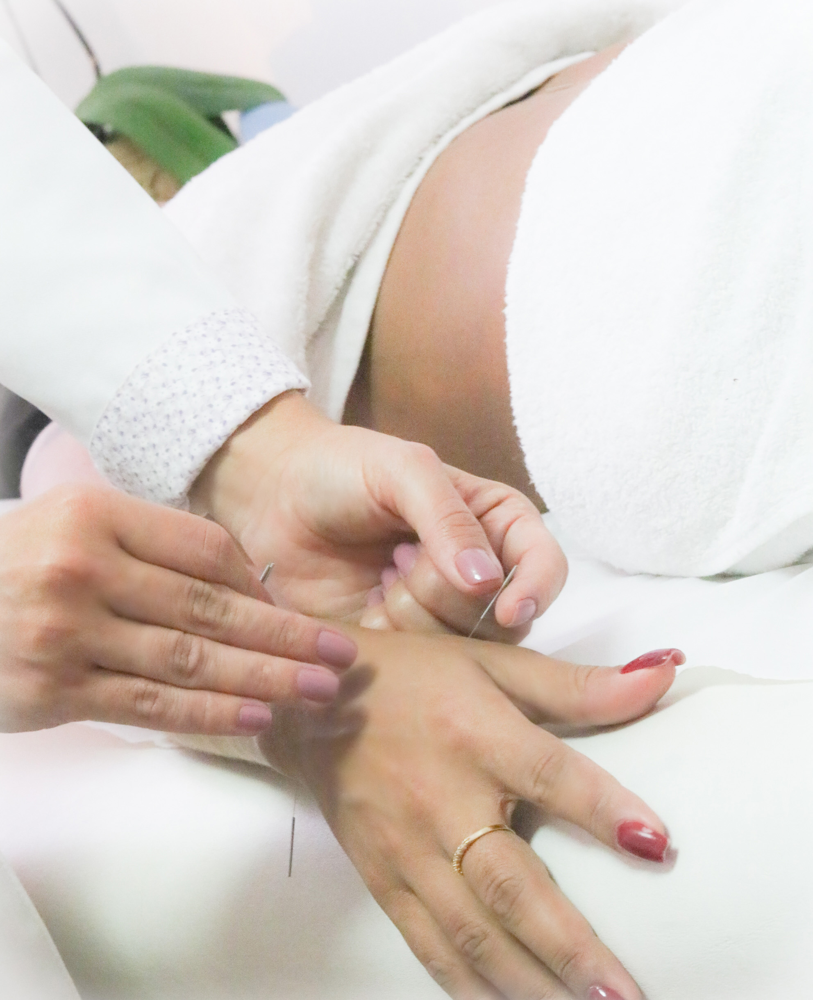
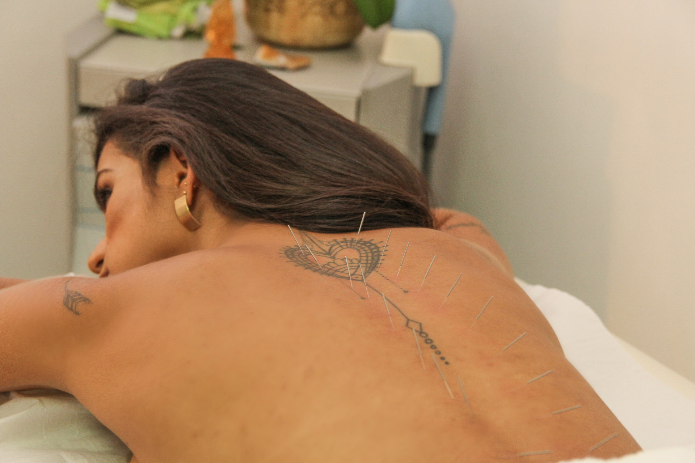
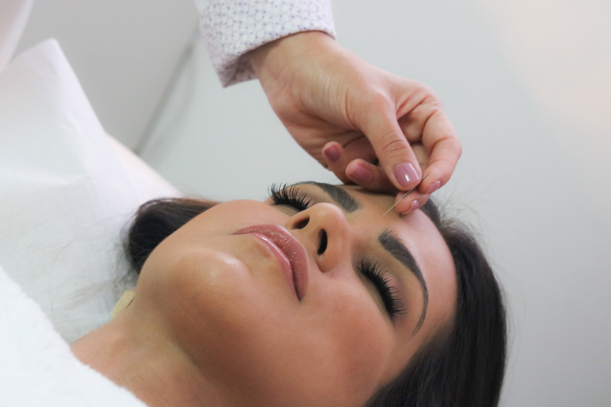
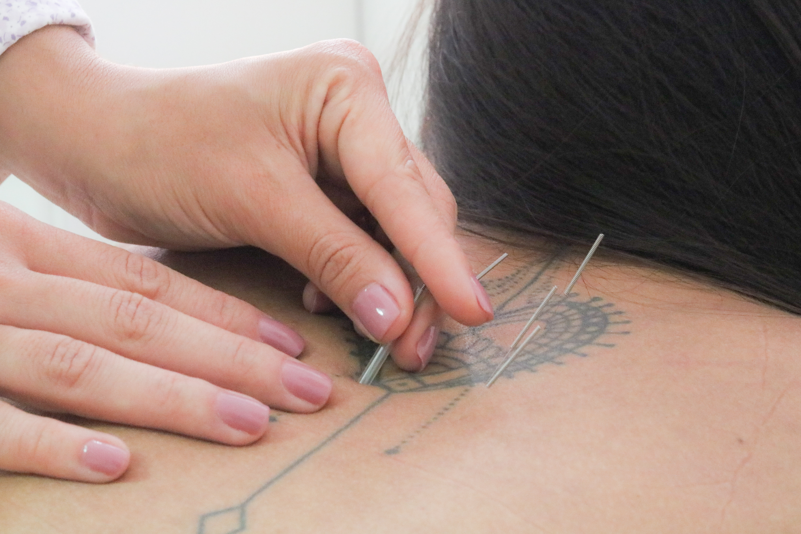

Acupuntura



Os benefícios da Acupuntura
Prevenção de doenças. Há aproximadamente 5 mil anos, a acupuntura vem amadurecendo e se tornando uma importante alternativa para prevenção e cura de inúmeras doenças. A técnica, desenvolvida pela medicina oriental, hoje, é reconhecida no mundo inteiro pelo seu potencial no combate de diversos problemas de saúde advindas da sociedade moderna. Nesse sentido, a ABA trabalha há 50 anos com intuito de promover a melhoria da qualidade de vida e da saúde dos brasileiros.
